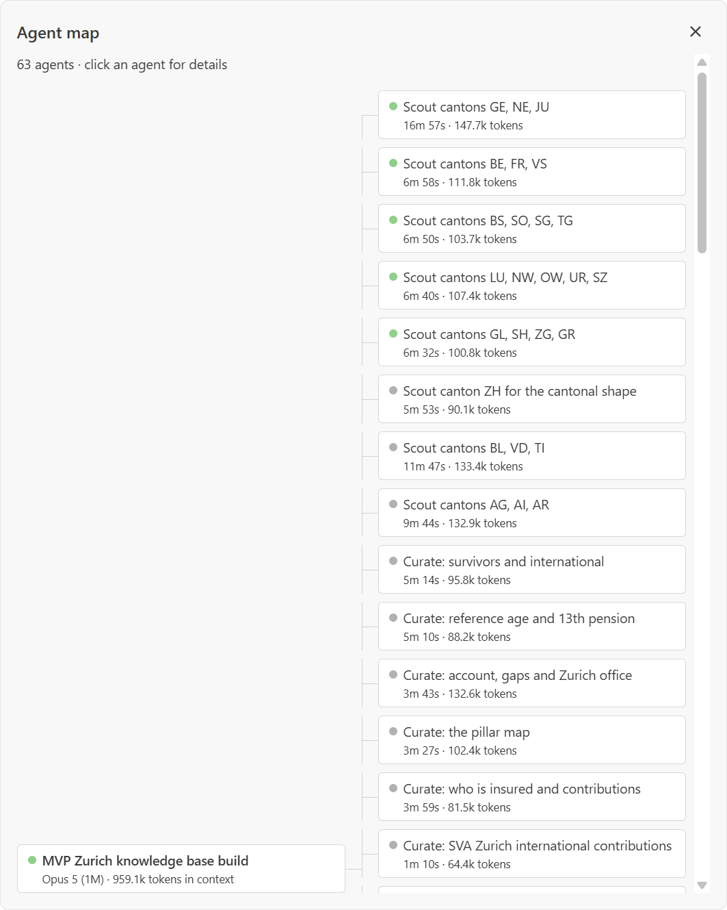
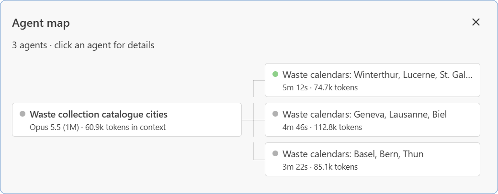

0:00 · send the question, then turn to the room
Problem
Confident, and often wrong.
You: When do I have to register after moving to Zurich?
AI: “Within 14 days”
MissingBefore your first day of work.
You: How do I import my Rottweiler to Zurich?
AI: “Microchip, rabies vaccine, pet passport”
MissingRottweilers are banned in Zurich.
0:25 · the answer stands; point at it
Solution
Swiss TIP – trusted information platform.
Any assistantplugs in through MCP
Reviewed factscurated and attested by a human, not model memory
Official sourceexcerpt, link and date on every fact
Honest gapsnot covered? It says so instead of guessing
0:44 · land on the last line
Benefit
One platform – any knowledge base.
Served today · public sectorSwiss residence
moving to and living in Zurich
the authority's own answer, in any assistant
Same platform · financeFinancial regulation
MiFID II, FinSA
an audit trail for every statement
Same platform · enterpriseCompany policies
HR, compliance, IT
quoted exactly, never paraphrased
Same platform · publishersMichelin Guide
the stars, served by Michelin itself
no invented stars
Swiss TIP underneath
reviewed facts·official sources·
named gaps·any MCP assistant
Wherever a wrong answer is too expensive.
backup · what it is, for questions
Swiss TIP - MCP server - contract swiss-tip/v4
3 tools search - resolve - get_evidence
+ lookup, where a dataset connector is registered
4 statuses SUPPORTED - NEEDS_CONTEXT - OUT_OF_COVERAGE - STALE
the server never composes the answer
every fact jurisdiction - validity dates - reviewer
excerpt + source URL + access date + hash
release content-hashed, attested, stale in 60 days
search lexical + embeddings, source terms in DE, EN, FR, IT
Zurich 20 topics - 211 concepts - 1,268 facts - 334 documents
cantons registering on arrival in all 26 - Zurich in full
datasets 5 waste calendars - 4,547 collection dates
backup · evaluation, for questions
Evaluation
Fact accuracy across harnesses.
CodexGPT-5.530 reviewed cases0.86
OpenCodeGPT-5.530 reviewed cases0.85
60 evaluations0.0 unsupported-claim rate2 harness/model setups
Fact accuracy is the mean of the optional DeepEval judge metric. Results compare the assistant and harness, not a guarantee for every future model or question.
backup · for questions, not for the minute
How it fits together
If the embeddings sidecar is down, search falls back to lexical and says so. The answer is always the assistant's.
backup · how the knowledge base was built


How the knowledge base was built
One coordinator holding the plan, 63 agents under it: scouts per group of cantons, curators per topic.
The agents draft. A person confirms every fact against its cited excerpt before it is served.
/plugin install swisstip-kb-builder@swisstip > Build a knowledge base about AHV and pensions for the Canton and City of Zurich.
A Claude Code plugin. Eleven steps, four subagents, two gates that stay human.
backup · what comes next (docs/product/next-steps.md)
What comes next
Orientation before searchA knowledge graph tool, called
first: which level of the state decides, the office at the user's
place, the laws. Built and measured, not in this release.
Deterministic source discoverySources found by code from
official registers and sitemaps, run and accepted in the admin
console. Agents only where code cannot decide: lower, predictable
cost.
A Swiss model, a checked contractApertus through Swisscom
for the model step, once Apertus 2.0 brings agentic and tool use,
measured against today's default; the tool schema checked in
CI.
MonetizationA hosted subscription, a licence for
self-hosting, and packs funded by their publishers: the next
slide.
backup · monetization (docs/product/next-steps.md)
Monetization
Hosted subscriptionWe run the server and keep the packs
fresh and attested. Tiers by call volume and by the packs served;
nothing to operate for the customer.
Self-hosting licenceAn organisation runs the server and
the admin console on its own infrastructure, with a licence per
instance and access to the attested packs.
Publisher-funded packsA canton, a commune or a federal
office pays for the upkeep and review of its own pack. Every
assistant then serves it at no charge, and the publisher's rules are
answered correctly wherever people ask.
Why it fitsRevenue follows the value: the operators who
serve answers, the organisations that need them in-house, and the
authorities whose information is at stake.
Enter sends · f finishes at once · double-click the thread to reset
0:00